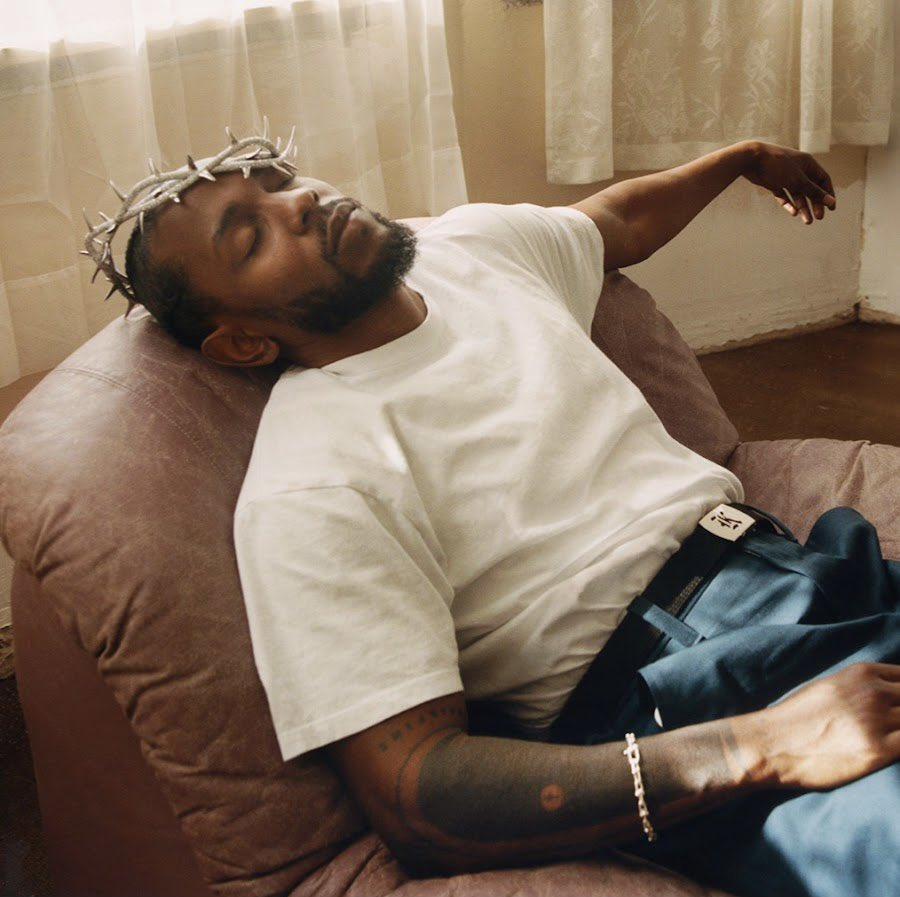

Testing Image Filters by Nischal
CSS blur() Function

Original Image
Blur Image 2px
Blur Image 6px
CSS brightness() Function
Original Image
Brightness 150%
Brightness 50%
CSS contrast() Function
Original Image
Contrast 150%
Contrast 50%
CSS drop-shadow() Function
Original Image
Drop-Shadow(8px 8px 10px)
Drop-Shadow (10px 10px 7px)
CSS grayscale() Function
Original Image
Grayscale(1)
Grayscale(60%)
Grayscale(0.4)
CSS hue-rotate() Function
Original Image
Hue-Rotate(200deg)
Hue-Rotate(90deg)
Hue-Rotate(-90deg)
CSS invert() Function
CSS opacity() Function
CSS saturate() Function
CSS sepia() Function